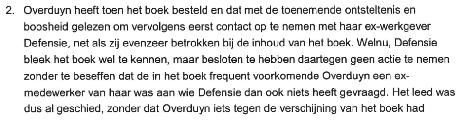

Preuve · Assignation
Assignation de Barbara Overduyn contre Giltay, 2015
Le passage
« 2. Overduyn a alors commandé le livre et l’a lu avec une consternation et une colère croissantes, pour ensuite prendre contact en premier lieu avec son ex-employeur, la Défense, tout aussi impliqué qu’elle dans le contenu du livre. Or, il s’est avéré que la Défense connaissait bel et bien le livre, mais avait décidé de ne pas agir contre celui-ci, sans se rendre compte que l’Overduyn qui apparaît fréquemment dans le livre était une de ses ex-employées, à qui la Défense n’a donc rien demandé. » Page 2, point 2. Traduit du néerlandais ; le texte original figure ci-dessous.
Texte original
“2. Overduyn heeft toen het boek besteld en dat met de toenemende ontsteltenis en boosheid gelezen om vervolgens eerst contact op te nemen met haar ex-werkgever Defensie, net als zij evenzeer betrokken bij de inhoud van het boek. Welnu, Defensie bleek het boek wel te kennen, maar besloten te hebben daartegen geen actie te nemen zonder te beseffen dat de in het boek frequent voorkomende Overduyn een ex-medewerker van haar was aan wie Defensie dan ook niets heeft gevraagd.” Dans l’assignation, le mot « ex-medewerker » (ancien employé) est coupé sur deux lignes. Après le passage cité, le paragraphe se poursuit par « Het leed was dus al geschied, zonder dat Overduyn iets tegen de verschijning van het boek had » (le mal était donc déjà fait, sans qu’Overduyn ait […] quoi que ce soit contre la parution du livre), puis continue sur une page qui ne fait pas partie de cet extrait.

Pourquoi ce document compte
Dans son assignation de 2015, Barbara Overduyn affirme qu’après avoir lu le livre, elle s’est d’abord adressée à son ex-employeur, la Défense, et que le ministère s’est avéré au courant de l’ouvrage mais avait décidé de ne pas agir contre lui, sans se rendre compte que l’Overduyn qui y apparaît si souvent était une ancienne employée. C’est sur ce document que repose ce que l’essai en dit. Overduyn a ensuite exigé une interdiction totale de publication et de parole, prononcée par le tribunal en décembre 2015.
Provenance
- Document
- Assignation en référé, extrait
- Expéditrice
- Barbara Overduyn, demeurant à Zoetermeer, demanderesse
- Destinataire
- Edwin Giltay, demeurant à La Haye, défendeur
- Avocats
- R.F. Thunnissen, STV Mahieu advocaten, La Haye, pour Overduyn ; M.Ch. Kaaks, Boekx Advocaten, Amsterdam, en tant que domicile élu de Giltay
- Juridiction
- Juge des référés du tribunal, siège de La Haye ; assignation délivrée en vertu d’un ordre verbal de ce juge
- Date
- 2015 ; le jour et le mois sont laissés en blanc dans l’assignation elle-même
- Références
- Pièces, annoncées dans l’assignation mais non reprises dans cet extrait
- Langue
- Néerlandais
- Pages
- Pages 1 et 2 sur 9 ; sur la page 1, la partie inférieure est caviardée, sur la page 2, tout ce qui se trouve au-dessus du point 2
- Conservé par
- Archives de l’auteur
- Voir aussi
- Tribunal de La Haye, jugement du 14 décembre 2015 (ECLI:NL:RBDHA:2015:15050)
Cité dans : l’essai « L’interdiction tombée, le livre debout » dans le chapitre (5) « Plus qu’un livre interdit ».
Fiche de preuve : https://
Document : https://
Dernière modification le 13 septembre 2026, consulté le 3 octobre 2026.

Cette page est une fiche de preuve du livre Le Général de dissimulation d’Edwin Giltay et du site web qui l’accompagne.